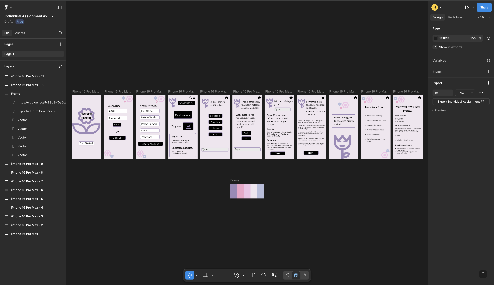

Mental Health App
A calm, student-focused mobile app that supports mood tracking, simple check-ins, and gentle wellbeing habits.
Overview
For this project, I explored how an app could support student mental wellbeing through simple, approachable interactions. I focused on gentle colors, soft spacing, and clear visual hierarchy to make the experience feel calming rather than clinical.
Process
I began with a paper prototype to quickly test basic layouts and flows with users. This helped me identify what screens felt intuitive, what needed clearer labels, and which interactions caused confusion.
After gathering feedback, I redesigned the layout digitally and created a high-fidelity Figma prototype that builds on the original paper ideas while refining the navigation, colors, and spacing.
What I Learned
This project helped me understand how low-fidelity testing can shape better digital designs. It also strengthened my UI skills and my interest in combining technology with wellbeing and healthcare.

